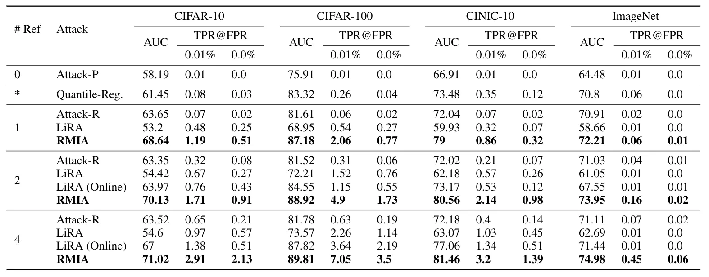
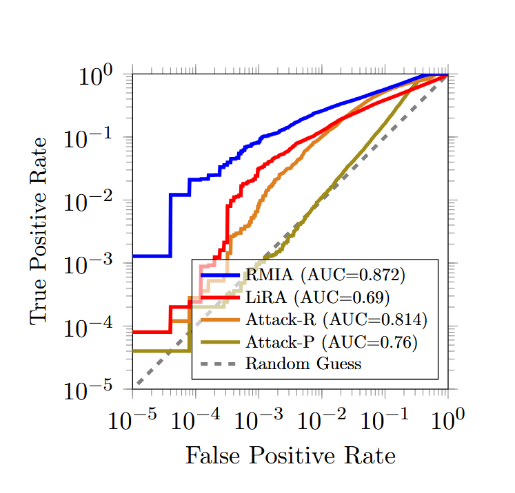
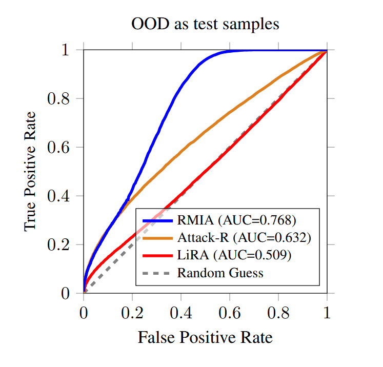
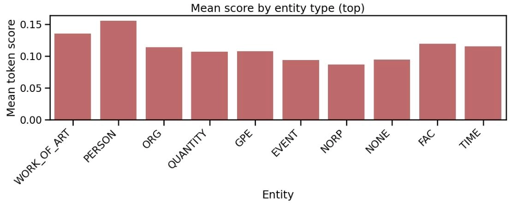

论文阅读：RMIA与InfoRMIA
RMIA 论文解读
论文提出一种低成本、高性能的鲁棒成员推理攻击（RMIA），解决此前现有成员推理攻击（MIA）计算开销高、低误报率（FPR）下真阳性率（TPR）低、鲁棒性差的问题，为机器学习模型隐私风险审计提供实用工具，聚焦黑盒场景下的参考模型类攻击。
核心内容
攻击原理
RMIA 将成员推理转化为假设检验问题，通过细粒度建模零假设，结合成对似然比检验（LR）实现精准区分。
- 零假设（\(H_{out}\)）：目标样本 \(x\) 未参与目标模型 \(\theta\) 的训练，等价于“\(x\) 被种群分布 \(\pi\) 中随机样本 \(z\) 替换后 \(\theta\) 的训练场景”集合。
- 参考模型：与 \(\theta\) 结构相似的辅助模型 \(\theta_{ref}\)，分为 IN 模型（训练集含 \(x\)）和 OUT 模型（训练集不含 \(x\)），用于估算数据的“正常概率”基准。
- 种群随机样本 \(z\)：从 \(\pi\) 中随机抽取的非 \(\theta\) 训练数据，作为非成员基准样本。
- 成对似然比（LR）：衡量 \(x\) 相对于 \(z\) 在模型 \(\theta\) 上的“特殊记忆”程度，LR 越大，\(x\) 越可能是成员。
似然比定义： \[ LR_{\theta}(x, z)=\frac{p(\theta | x)}{p(\theta | z)} \]
- \(p(\theta | x)\)：目标样本 \(x\) 参与训练时生成目标模型 \(\theta\) 的概率，反映 \(\theta\) 对 \(x\) 的记忆程度；
- \(p(\theta | z)\)：典型非成员样本 \(z\) 参与训练时生成目标模型 \(\theta\) 的概率，作为非成员基准。
黑盒场景简化（贝叶斯规则）：由于上式中的“模型生成概率”不可直接计算，利用贝叶斯规则转化为“模型预测概率”： \[ LR_{\theta}(x, z)=\left(\frac{p(x | \theta)}{p(x)}\right) \cdot\left(\frac{p(z | \theta)}{p(z)}\right)^{-1}=\left(\frac{p(x | \theta)}{p(x)}\right) \cdot\left(\frac{p(z)}{p(z | \theta)}\right) \]
- \(p(x | \theta)\)：目标模型 \(\theta\) 对 \(x\) 的预测似然（如Softmax 概率）；
- \(p(x)\)：参考模型对 \(x\) 的平均预测似然（基准值）；
- 两项分别表示 \(x\) 和 \(z\) 的“成员概率相对值”。
攻击得分计算： \[ \text{Score}_{MIA}(x ; \theta)=p_{z \sim \pi}\left(LR_{\theta}(x, z) \geq \gamma\right)=\mathbb{E}_{z \sim \pi}\left[\mathbb{I}\left(LR_{\theta}(x, z) \geq \gamma\right)\right] \]
- 统计 \(x\) 能“支配”的种群样本 \(z\) 比例，即 \(x\) 相对于 \(z\) 的似然比 \(LR\geq\gamma\) 的 \(z\) 占种群随机样本集合 \(Z\) 的比例。（\(\gamma\) 为预设阈值，通常大于等于 1）；
- 得分 \(\text{Score}\geq\beta\) 则判定为成员，否则为非成员。（\(\beta\) 为预设决策阈值）。
攻击流程
- 训练少量参考模型（1-2个即可），从种群分布 \(\pi\) 中采样大量非成员样本 \(z\)；
- 离线模式：仅训练 OUT 模型，节省计算资源，适合大规模评估场景；
- 在线模式：为每个目标样本 \(x\) 训练对应的 IN 模型，性能更优，但计算开销较大。
- 用参考模型 \(\theta_{ref}\) 估算 \(p(x)\) 和 \(p(z)\)；
- 计算目标样本 \(x\) 与每个 \(z\) 的似然比 \(LR\)；
- 统计 \(LR\geq\gamma\) 的 \(z\) 比例作为攻击得分；
- 得分 \(\text{Score}\geq\beta\) 则判定 \(x\) 为目标模型 \(\theta\) 的训练成员。
关键结论
实验设置
- 数据集：CIFAR-10/100、CINIC-10、ImageNet、Purchase-100（覆盖图像、表格数据）；
- 对比方法：LiRA、Attack-P、Attack-R、Quantile Regression 等主流 MIA；
- 评估指标：AUC（ROC曲线下面积）、低 FPR（0%/0.01%）对应的 TPR。
实验结论
- 低成本高性能：仅用 1 个参考模型时，CIFAR-100 上 AUC 达 87.18%，较 LiRA（68.95%）提升 26%，0% FPR 下 TPR 达 0.77%（LiRA 仅 0.27%）； 
- 低误报率高性能：在极低 FPR（甚至0）下仍保持高 TPR，低 FPR 区域 TPR 较现有方法提升 2-4 倍； 
- 强鲁棒性：
- 面对分布外（OOD）数据，RMIA AUC 达 0.768，远超 LiRA（0.509）和 Attack-R（0.632）； 
- 目标模型与参考模型数据集/架构不同时，AUC 仍领先最多 25%；
- 通用性：适用于神经网络、梯度提升决策树（GBDT）等算法，支持多类型数据集；
- 离线模式高效：仅用 OUT 模型（无需为每个 \(x\) 训练 IN 模型）即可实现接近在线模式的性能，大幅降低计算成本。
InfoRMIA 论文解读
ICLR 2026：(Token-Level) InfoRMIA: Stronger Membership Inference and Memorization Assessment for LLMs
论文针对 RMIA 依赖大规模种群数据集、得分离散、调参复杂等问题，提出信息论驱动的 InfoRMIA，同时适配大型语言模型（LLMs）的 token 级隐私评估需求，实现更精准、高效、细粒度的成员推理，聚焦 LLMs 和 LMMs 场景下的黑盒参考模型类攻击。
核心内容
攻击原理
InfoRMIA 从信息论视角重构成员推理，将 RMIA 的“离散计数得分”转化为“连续信息增益得分”，并提出 token 级评估框架适配 LLMs 特性。
- 信息增益：“用目标样本 \(x\) 解释模型 \(\theta\) 的生成”比“用种群随机样本 \(z\) 解释模型 \(\theta\)
的生成”平均节省多少比特信息，增益越大，\(x\) 越可能是成员；
- 相比之下，RMIA 的得分是离散的：给定了种群随机样本集合 \(Z\) 之后，则集合规模决定了得分粒度，如 \(|Z|=100\) 时粒度为 0.01，难以捕捉细微差异；
- 而 InfoRMIA 的得分是连续的：其核心是基于信息论的平均信息增益计算，不受 \(Z\) 规模限制，得分取值范围为实数域，能捕捉更细腻的记忆信号。
- 同时，这也使得 InfoRMIA 不再像 RMIA 那样强依赖大规模种群数据集 \(Z\)，只需少量样本（如 100 个）即可稳定估计分布特征，降低数据收集成本。
- token 级评估：适配 LLM 逐 token
生成的本质，把整个文本序列的成员推理拆解成每个 token
在前缀基础上的的独立推理，既能精准找到敏感信息对应的
token，又能保留序列级推理能力。
- 相比之下，现有框架只为每个序列计算一个成员信号，这是一种高度压缩的信号，丢失了每个 token 位置上的丰富信息，一方面难以定位敏感 token，另一方面隐私信号也更容易被非敏感 token 稀释。
- 核心公式
原始信息增益定义： \[ \text{Test Statistic} = \mathbb{E}_{z} \left[ \log\left( \frac{p(\theta | x)}{p(\theta | z)} \right) \right] \]
- 对所有 \(z\) 计算用 \(x\) 解释 \(\theta\) 与用 \(z\) 解释 \(\theta\) 的对数似然比期望，即平均信息增益。
贝叶斯分解与 KL 散度转换（最终形式）： \[ \begin{aligned} \text{Test Statistic} & =\sum_{z} p(z) \log \left(\frac{p(\theta | x)}{p(\theta | z)}\right) \\ & =\sum_{z} p(z) \log \left(\frac{p(x | \theta) p(z)}{p(z | \theta) p(x)}\right) \\ & =\sum_{z} p(z)\left[\log \left(\frac{p(x | \theta)}{p(x)}\right)+\log \left(\frac{p(z)}{p(z | \theta)}\right)\right] \\ & =\log \left(\frac{p(x | \theta)}{p(x)}\right)+\sum_{z} p(z) \log \left(\frac{p(z)}{p(z | \theta)}\right) \\ & =\log \left(\frac{p(x | \theta)}{p(x)}\right)+D_{KL}(p(z) \| p(z | \theta)) \end{aligned} \]
- 记忆项：\(\log\left( \frac{p(x | \theta)}{p(x)} \right)\)，量化 \(\theta\) 对 \(x\) 的记忆程度，比值越大，记忆越深；
- 校准项：\(D_{KL}(p(z) \parallel p(z | \theta))\)，量化种群 \(z\) 的先验分布与 \(\theta\) 条件下分布的差异，校准“记忆项”的偏差，避免因 \(x\) 是易分类样本（即使非成员也有高预测概率）导致的误判，其数值越大，说明 \(\theta\) 对种群数据的泛化性越差，模型可能过拟合，成员推理更容易成功。
LLM token 级适配：
- 无需额外构建种群数据集 \(Z\)，直接用 LLM 词汇表中除目标 token \(x\) 外的所有 token 作为 \(z\)；
- 由 \[ \begin{aligned} & p(x | \theta) + \sum_{z \in Z} p(z | \theta) = \sum_{z \in V} p(z | \theta) = 1 \\ & \sum_{z \in V} p(z) = \sum_{z \in V} Avg_{\theta_{ref }} p(z | \theta_{ref }) = Avg_{\theta_{ref }} \sum_{z \in V} p(z | \theta_{ref }) = 1 \end{aligned} \]
- 可以得到一个不需要标准化的等价公式 \[ \begin{aligned} & \sum_{z \in Z} p(z) log \left(\frac{p(\theta | x)}{p(\theta | z)}\right) \\ = & \sum_{z \in Z} p(z) log \left(\frac{p(x | \theta) p(z)}{p(z | \theta) p(x)}\right)+p(x) log \left(\frac{p(x | \theta) p(x)}{p(x | \theta) p(x)}\right) \\ = & \sum_{z \in V} p(z) log \left(\frac{p(x | \theta) p(z)}{p(z | \theta) p(x)}\right) \\ = & \sum_{z \in V} p(z) log \left(\frac{p(x | \theta)}{p(x)}\right)+\sum_{z \in V} p(z) log \left(\frac{p(z)}{p(z | \theta)}\right) \\ = & log \left(\frac{p(x | \theta)}{p(x)}\right)+D_{KL}(p(z) \| p(z | \theta)) \end{aligned} \]
- 则 InfoRMIA 公式不变，但 \(z\) 取自词汇表 \(V\)，无需将 \(x\) 从 \(V\) 中剔除。
- 对每个 token 单独计算 InfoRMIA 得分，通过平均、Min-k 等方式聚合为序列级得分。
- 无需额外构建种群数据集 \(Z\)，直接用 LLM 词汇表中除目标 token \(x\) 外的所有 token 作为 \(z\)；
攻击流程
- 训练少量参考模型，采样少量种群样本 \(z\)（对 LLM 而言，可以直接使用词汇表）；
- 用参考模型 \(\theta_{ref}\) 估算 \(p(x)\) 和 \(p(z)\)；
- 计算目标样本 \(x\) 的记忆项 \(\log\left( \frac{p(x | \theta)}{p(x)} \right)\)；
- 计算校准项 \(D_{KL}(p(z) \parallel p(z | \theta))\)；
- 代入公式得到连续攻击得分，得分越高，\(x\) 为成员的概率越大。
特别的，对于 LLM 场景下的 token 级 InfoRMIA，流程如下：
- 将文本序列拆分为“前缀-token”对（如序列 \(\{x_1,x_2,x_3,\ldots,x_N\}\) 拆分为 \((\{x_1\},x_2),(\{x_1,x_2\},x_3),\ldots,(\{x_1,x_2,\ldots,x_{N-1}\},x_N)\)）；
- 将所有 token \(x\) 视为其各自前缀子串的标签，以词汇表所有 token 为 \(z\)，计算 InfoRMIA 得分；
- 聚合 token 级得分得到序列级结果，或直接分析单个 token 的记忆程度。
关键结论
实验设置
- 数据集：AG News、ai4pivacy、MIMIR 基准（LLM 场景），Purchase100、CIFAR-10（通用场景）；
- 模型：GPT-2、Pythia 系列（160M~6.9B 参数）、CNN、GBDT；
- 对比方法：RMIA、LiRA、Min-K%、Zlib 等。
实验结论
- 通用场景性能远超 RMIA：
- AG News 数据集上，\(|Z|=100\) 时 InfoRMIA AUC 达 0.8784，RMIA 为 0.8574，TPR@0.1%FPR 从 0% 提升至 12%；
- 对种群数据集 \(Z\)
规模不敏感，\(|Z|=100\) 与 \(|Z|=1000\) 性能一致，大幅降低数据成本；

- LLM 场景优势显著：
- token 级 InfoRMIA 在 MIMIR 基准上，低 FPR 下 TPR 领先现有参考模型类方法；
- 能精准定位敏感 token，且隐私信号不被非敏感 token 稀释，姓名、艺术品名称等实体 token 的记忆得分最高； 
- 鲁棒性与效率：
- 面对分布偏移、模型架构差异时，AUC 仍领先最多 25%；
- 参考模型最低仅需 1 个，训练成本低，支持低配置硬件部署；
- 细粒度评估价值：
- 传统方法序列级高得分可能仅源于非敏感 token 记忆，而敏感 token 信号在序列级易被稀释；
- InfoRMIA 的 token 级热力图可直观展示泄露源，为定向模型遗忘提供依据。
总结：InfoRMIA 相对 RMIA 的改进点
| 改进点 | RMIA | InfoRMIA |
|---|---|---|
| 得分机制 | 离散计数得分，粒度依赖种群数据集规模 | 连续信息增益得分，不受种群数据集规模限制 |
| 超参数依赖 | 需调节支配阈值 \(\gamma\) | 无需支配阈值 \(\gamma\)，自动校准 |
| 种群数据集依赖 | 需大规模种群数据集 | 仅需少量样本，LLM 可用词汇表替代 |
| LLM 适配性 | 序列级评估，隐私信号易被稀释 | token 级评估，精准定位敏感 token |
| 性能表现 | 低计算预算下性能一般，分布偏移场景鲁棒性差 | 全场景碾压，鲁棒性更强 |
参考文献
- Zarifzadeh S, Liu P, Shokri R. Low-cost high-power membership inference attacks[J]. arXiv preprint arXiv:2312.03262, 2023.
- Tao J, Shokri R. (Token-Level) InfoRMIA: Stronger Membership Inference and Memorization Assessment for LLMs[J]. arXiv preprint arXiv:2510.05582, 2025.